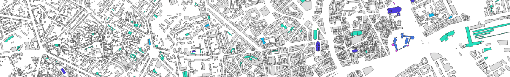
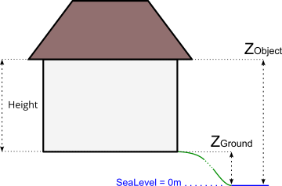
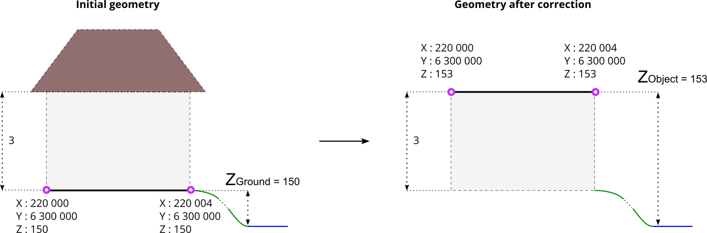
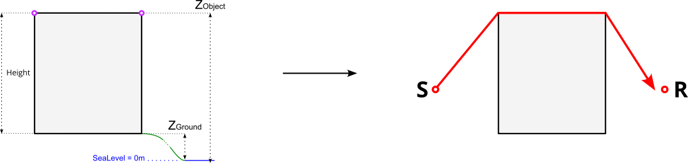
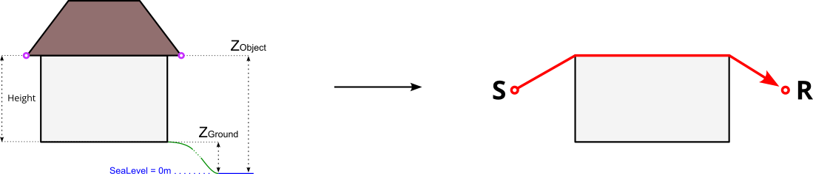
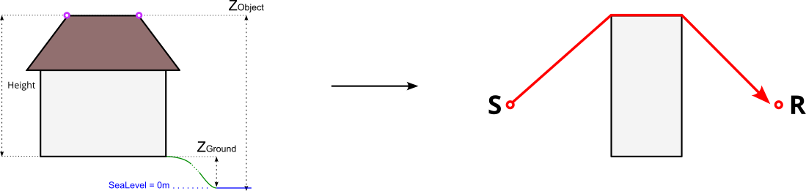
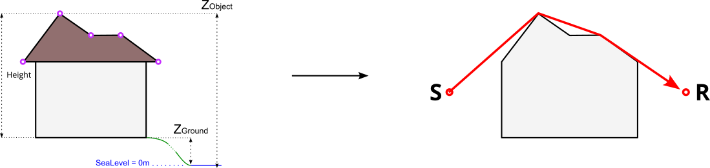
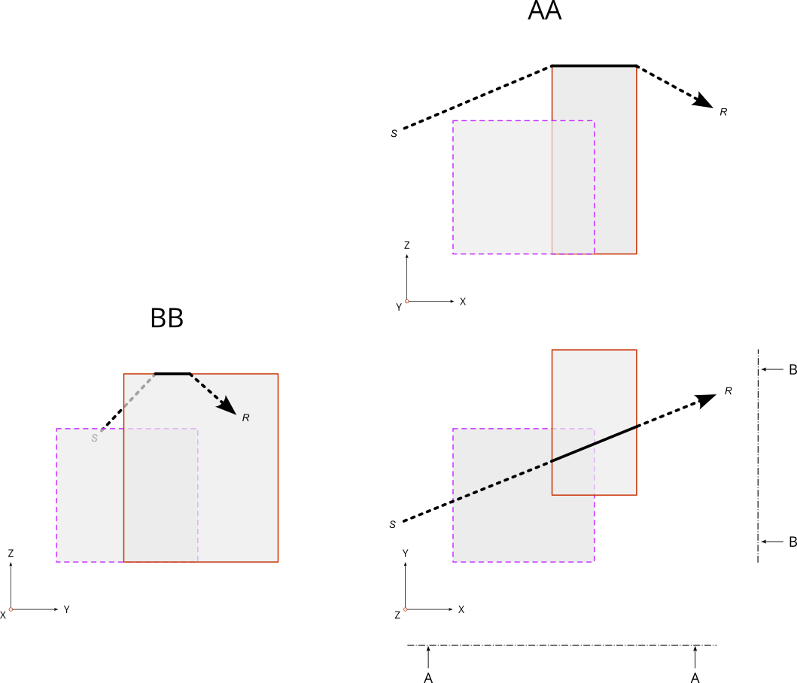

Buildings
NoiseModelling is a tool for producing noise maps. To do so, at different stages of the process, the application needs input data, respecting a strict formalism.
Below we describe the table BUILDINGS, dealing with buildings.
The other tables are accessible via the left menu in the Input tables & parameters section.

Table definition
Warning
In the list below, the columns noted with * are mandatory
THE_GEOM*Description: building’s geometry. It can be in 2D (stuck to the ground) or in 3D (see Geometry modelling section below)
Type: Geometry (
POLYGONorMULTIPOLYGON)
HEIGHT*Description: building’s height (in meters)
Type: Double
POPDescription: number of inhabitant in the building
Type: Double
Note
If you want to generate a scene without buildings, create two fictitious buildings, placed in two corners of the scene, and assign them a height of 0 meter.
Geometry modelling
In NoiseModelling, the geometry of the building is used to calculate the 3D ray path of the acoustic wave. Therefore, we need to know the footprint of the building as well as the points in height (at the roof, the gutter, …)
To determine the 3D shape of the building we can use some of the following elements:
Zground: The ground altitude, exprimed in meters and based on the 0 sea levelZobject: The altitude in the air, exprimed in meters and based on the 0 sea levelHEIGHT: The height, equal to the diffirence betweenZobjectandZground

In this context, geometry coordinates have to be in 3D, with:
XandYcoordinates corresponding to the building’s footprint (or the gutter/roof projection to the ground)Z=Zobject: coordinate corresponding to the gutter or the roof altitude(s), …
Z coordinate deduction
Depending on the information you have, NoiseModelling will adpat the process to deduce the Zobject information and therefore the 3D frame of the building.
Two cases are possible:
1. The geometry has no Z coordinate
There is a DEM layer
The DEM is triangulated. Then, all the vertices of the building are projected onto the triangle below it in order to determine their altitudes. Finally, the minimum altitude is taken and assigned to the whole building: Zground = Minimum DEM Z value. Then:
If
HEIGHT> 0 thenZobject=Zground+HEIGHTIf
HEIGHT= 0 thenZobject=Zgroundand Warning message “Be carreful, some buildings are 0 meter high”If
HEIGHTnull or < 0 then Error message “Not possible to determine Z coordinates”
There is no DEM layer
If
HEIGHT> 0 thenZobject=HEIGHTIf
HEIGHT= 0 thenZobject= 0 and Warning message “Be carreful, some buildings are 0 meter high”If
HEIGHTnull or < 0 then Error message “Not possible to determine Z coordinates”
2. The geometry has a Z coordinate
- The Z coordinate correspond to
Zobject It’s ok, your data is already ready to be used by NoiseModelling
- The Z coordinate correspond to
- The Z coordinate correspond to
Zground You are invited to correct
Zvalue(s) by changing the information by yourself or by using the dedicated WPS block calledCorrect_building_altitude
- The Z coordinate correspond to
Below is an example with a initial geometry (coordinates are exprimed in French Lambert 93 (EPSG:2154) system) with a Zground value coupled with HEIGHT information. After correction, the geometry has a correct Z value, which corresponds to Zobject.

Ray path
Depending on the building modelisation and the Zobject you have, the acoustic wave path will differ.
In the 4 examples below,
the left-hand side is dealing with the building’s modelisation. Pink circles represents the vertices of the geometry
the right-hand side represents the corresponding path of the ray (in red), from the sound source (S) to the receiver (R) and how the building (in grey) is “understood” by NoiseModelling.
Case 1 : there is no roof

Case 2 : Zobject is on the gutter level

Case 3 : Zobject is on top ot the roof

Case 4 : Complex roof shape

Topology
In the table BUILDINGS there is no topological constraint. Even if it is not recommended, this means that NoiseModelling accepts that the buildings overlap. In this case, the highest points and edges will be retained for the determination of the wave path.
The figure below illustrate this possibility with two buildings that overlaps. The wave is going from the source S to the receveiver R.
